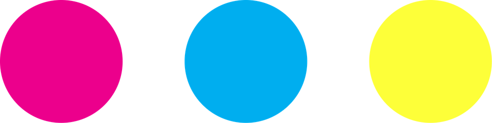

developing…
your strip slides out below in about a minute
scan for your digital copy

tap in order — 1st goes on top
Open this any time by tapping the top-left corner 5 times. Settings are saved on this iPad.
Needs internet on the iPad and a free Cloudinary account. Leave blank to turn off. Strips made while offline are saved and uploaded automatically once the iPad is back online.